网站使用总体说明
课前：保证生成内容可靠、一致，可直接进入课堂使用

项目管理页面
教师可创建课程项目，管理教学资源，进行知识库的分割与管理，为后续教学内容生成奠定基础。
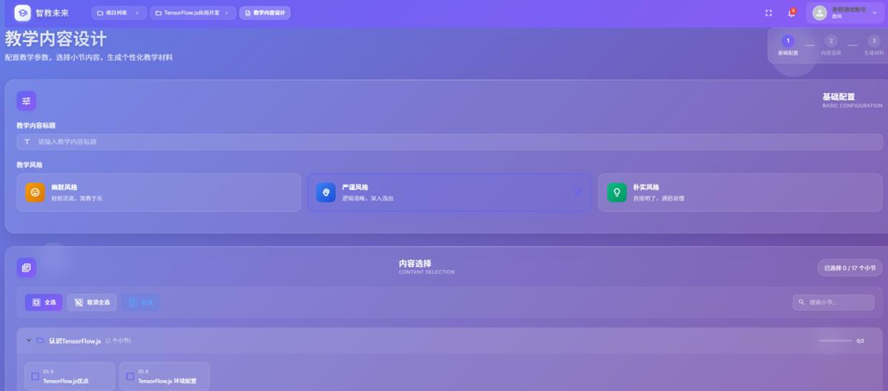
教学内容设计
系统基于知识库自动生成教学大纲和讲稿，支持多种教学风格选择，教师可灵活调整内容结构。
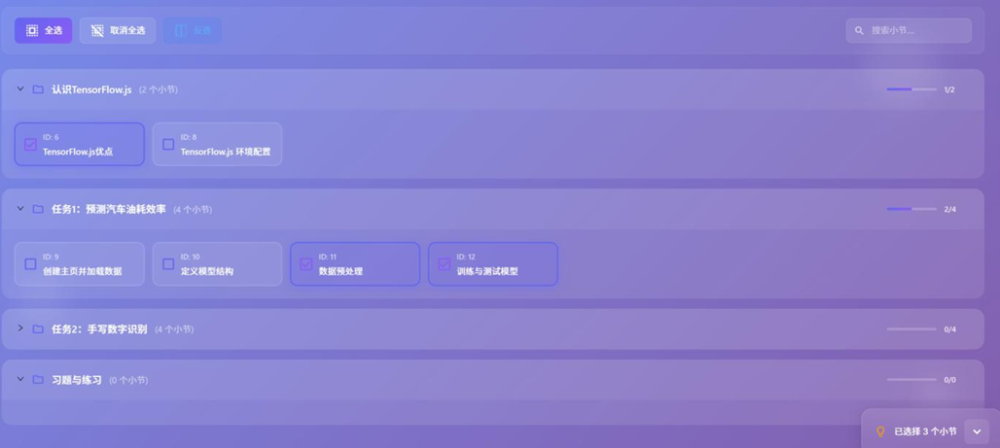
内容选择
教师可从知识库中选择特定小节，系统自动生成对应的教学内容，支持个性化定制和调整。
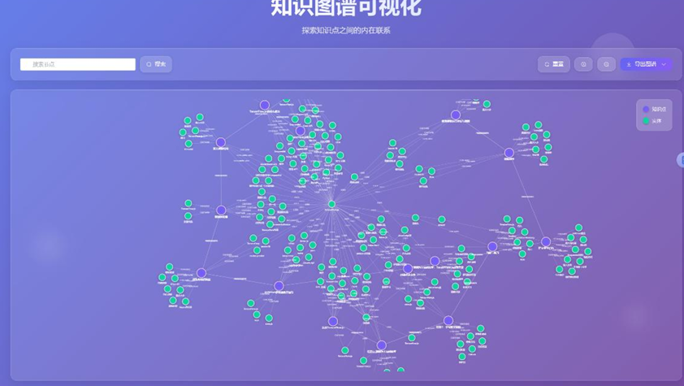
知识图谱
系统自动构建课程知识图谱，可视化展示知识点间的关联关系，帮助教师理解知识结构。
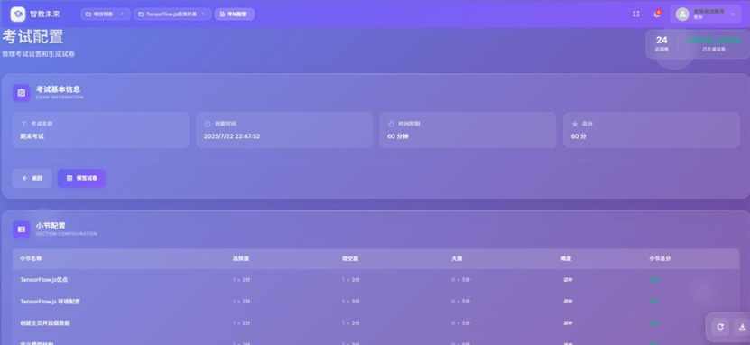
考试创建
教师可创建考试，配置题目类型和分值，系统根据知识图谱自动生成符合要求的试卷。
课中：机器人教师执行标准化讲授，多模态感知提升课堂互动
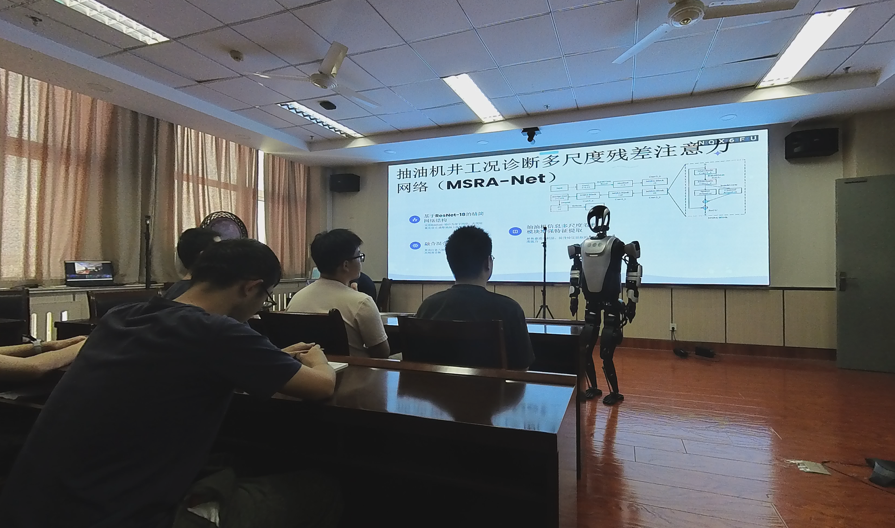
机器人讲解
机器人教师基于生成的讲稿和课件，自主开展标准化讲解，配合语音合成和动作演示，提升课堂效果。
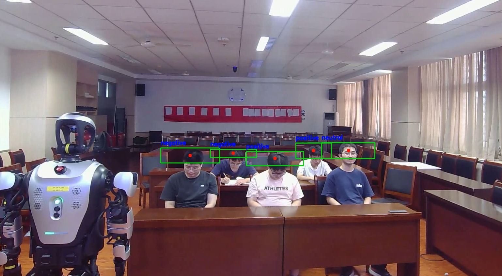
情绪预测
系统通过多模态感知技术，实时监测学生情绪和注意力状态，为个性化教学干预提供数据支持。
课后：测评蓝图保障覆盖全面，过程数据还原思维轨迹
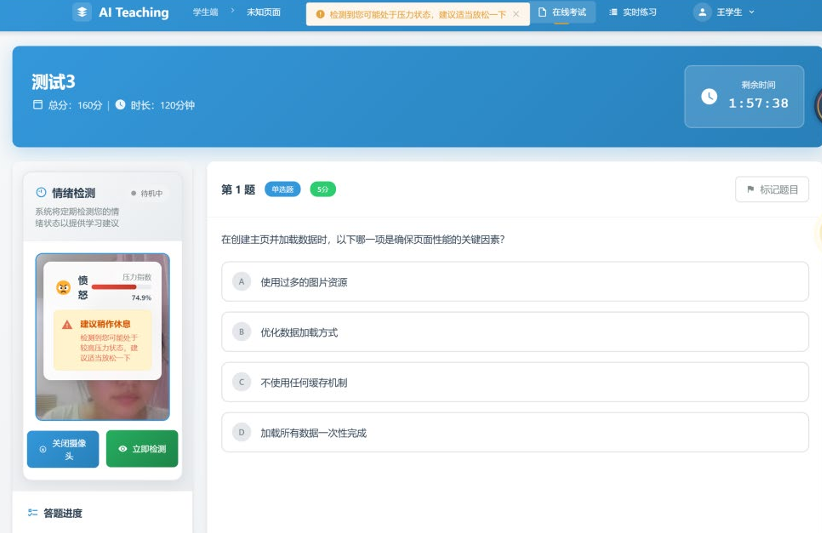
考试及压力检测
系统在考试过程中实时监测学生情绪和压力状态，记录答题过程数据，为后续分析提供依据。
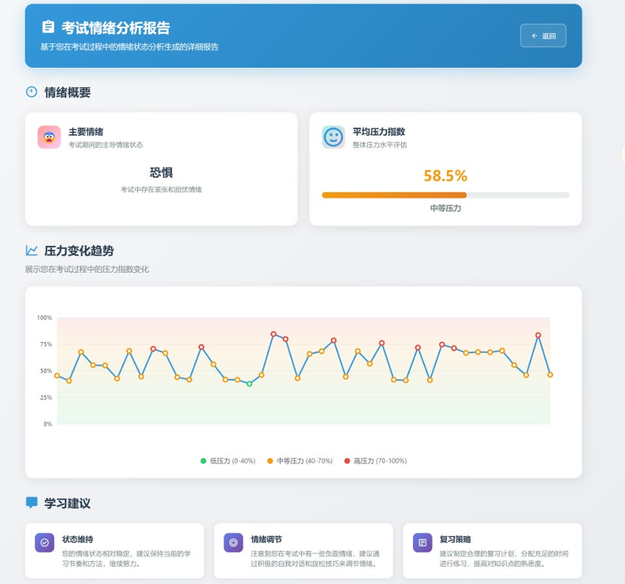
情绪报告
考试结束后生成情绪分析报告，展示学生在考试过程中的情绪变化趋势，帮助了解学习状态。

分析报告
系统生成多维度分析报告，包括知识点掌握度、错因分析、群体诊断等，为教学改进提供数据支持。
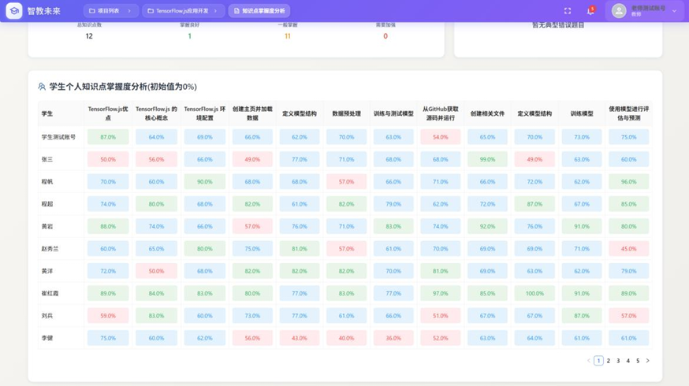
知识点掌握度查询
教师和学生可查询各知识点的掌握情况，系统以可视化方式展示学习进度和薄弱环节。
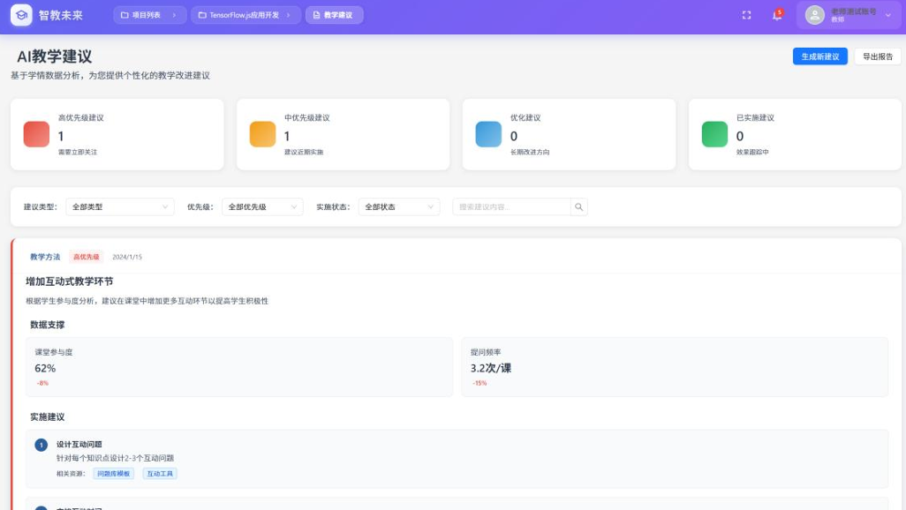
教学建议
基于测评数据，系统自动生成教学改进建议，包括重讲点、替换例题等，形成教学闭环。
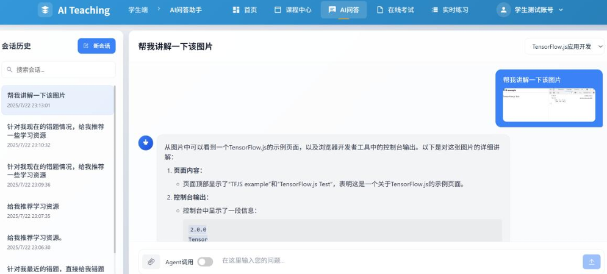
AI问答
学生可通过AI问答助手获得个性化解答，系统提供思维链和知识点出处，帮助深入理解。
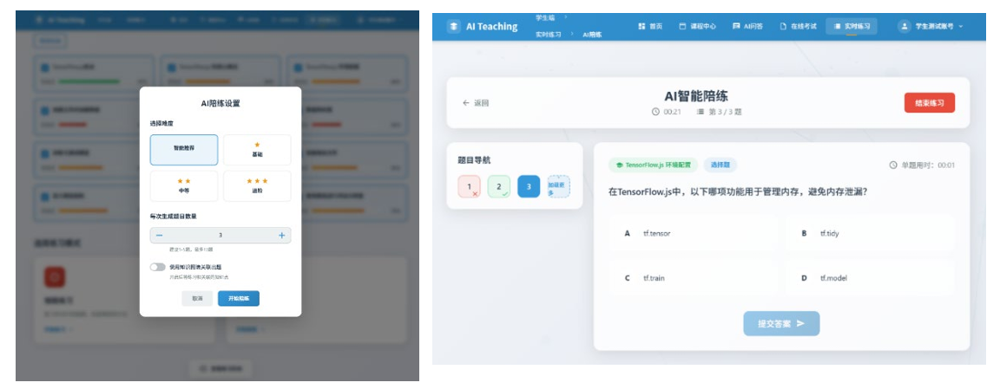
实时练习
系统基于知识图谱和学习状态，动态生成个性化练习题，实现自适应学习和巩固提升。
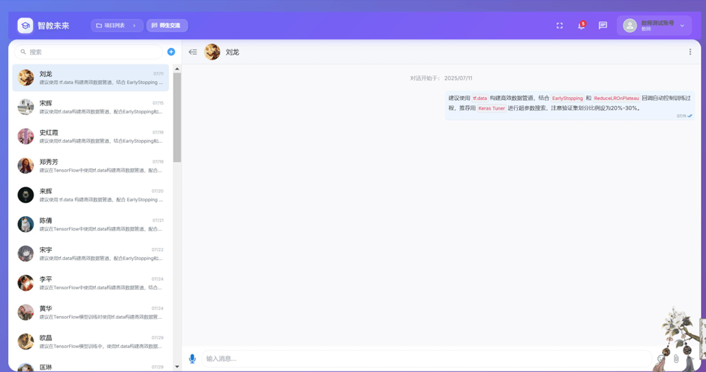
师生互动
提供师生实时交流功能，支持文字、图片等多种形式，促进课后的学习交流和问题解答。